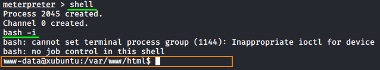
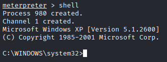
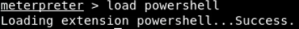
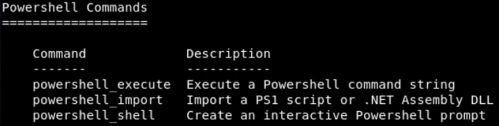
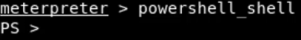

friendlier terminal prompt
Linux
shell
bash -i

Windows
• load cmd shell
meterpreter> shell

• load powershell shell
meterpreter> load powershell
meterpreter> help
meterpreter> powershell_shell


